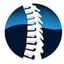
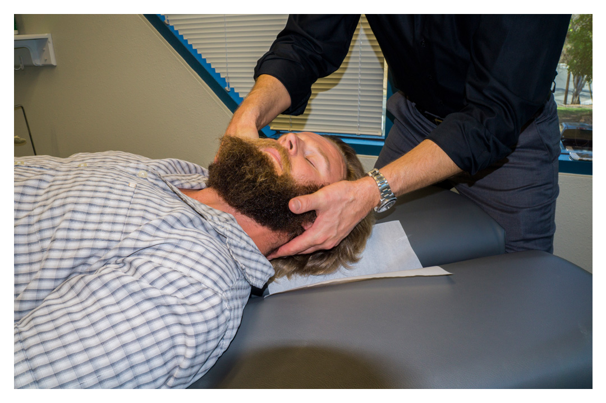
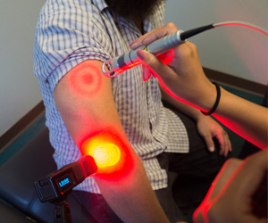

|  | Integrative PHYSICAL THERAPY & CHIROPRACTIC |
Chiropractic CareThrough Chiropractic adjustments many of the stressors (such as bad posture, motor vehicle accidents, traumas, or inappropriate sleeping positions) can be relieved. Chiropractors can play a major role in preventative Read More | Spinal DecompressionWhat Can Spinal Decompression Do For You? A patient suffering from disc problems usually was given pain medications, instructed to refrain from physical activities and when they were not progressing they were sent for spinal surgery.The New Treatment for Low Back Pain... Read More | Class4 Laser TherapyThe positive effect of Laser on tissue is unique to laser therapy, and no other physical therapy method can duplicate those effects.Helping to reduce a patient's pain, inflammation and even enhance tissue healing, laser therapy is a painless Read More |
Physical TherapyWhat Can Physical Therapy Do For You?Physical Rehabilitation is administered to help restore function, improve mobility, relieve pain, and prevent or limit permanent physical disabilities of patients suffering from injuries or diseaseRead More |
MassageWhat Can Massage Therapy Do For You?Therapeutic Massage can help relieve stress, muscle pain, injuries and more. Your body functions so much better when you are in top condition. Sports injuries, household accidents, repetitive actions on the jobRead More |